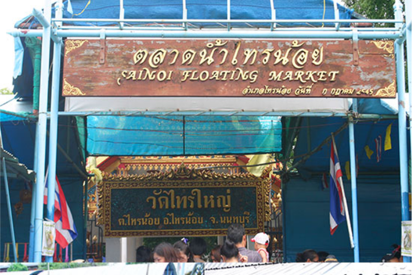
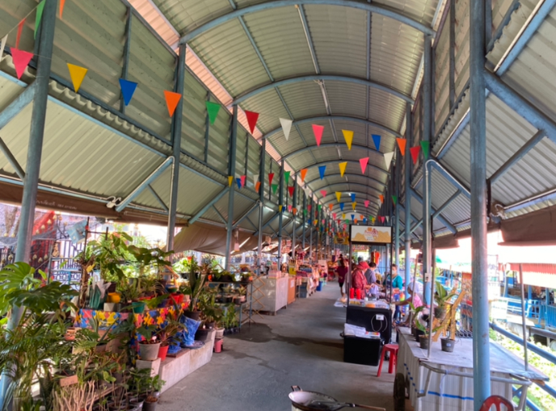
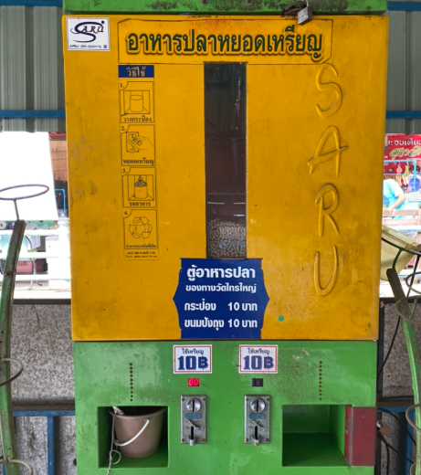
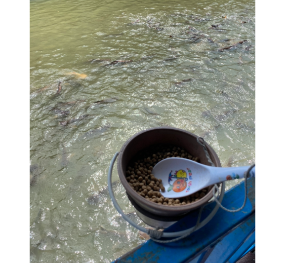

ตลาดน้ำวัดไทรน้อย

การเดินเที่ยวตลาดน้ำไทรน้อย ที่นี่มีของขายมากมาย ส่วนใหญ่จะเป็นของที่ทำในชุมชน ฝั่งหนึ่งเป็นอาหารแห้งหรือขนม ข้ามไปอีกฝั่งเป็นอาหารปรุงสุก พร้อมมีที่นั่งทาน โดยทั้งสองฝั่งถูกเชื่อมกันด้วยสะพานไม้ข้ามคลองเล็กๆ


มาทำบุญปล่อยปลา หรือ ให้อาหารปลา ได้ ซึ่งอาหารปลาที่นี่จะมีเป็นตู้ โดยใช้วิธีหยอดเหรียญ แล้วเอาถังรอง ราคาแค่ 10 บาทเองแต่อาหารปลาได้ปริมาณมากพอสมควร

ของที่นี่มีเยอะพอสมควร ไม่ว่าจะเป็นสินค้าจากชุมชน พวกผักผลไม้สดๆราคาถูก ยังมีผักกำละ 10 บาทขายอยู่เยอะเลย นอกจากนั้นก็จะเป็นพวกร้าน เครื่องดื่ม ไอศกรีมโบราณ ขนมบ้าบิ่น ไส้กรอกอีสาน ถือเป็นตัวเลือกที่ดีในการฝากท้องในย่านนี้